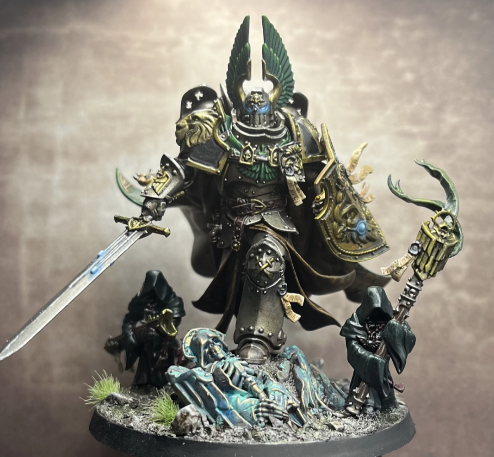
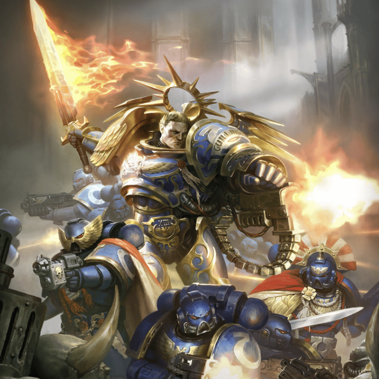
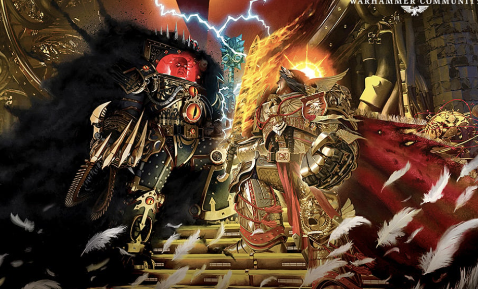
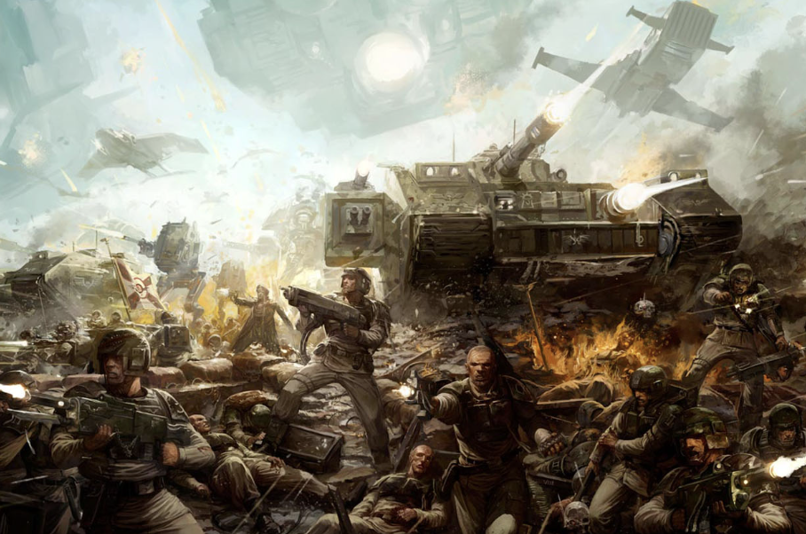

A warhammer fan website consisting of his favorite miniatures and scenes and novels, created by Felix Chen ~~ 🤑
Legendary Heroes


Epic Battles


Grimdark Lore
In the grim darkness of the far future, there is only war. Explore the stories behind the factions, the Primarchs, and the eternal conflict that defines the 41st millennium.